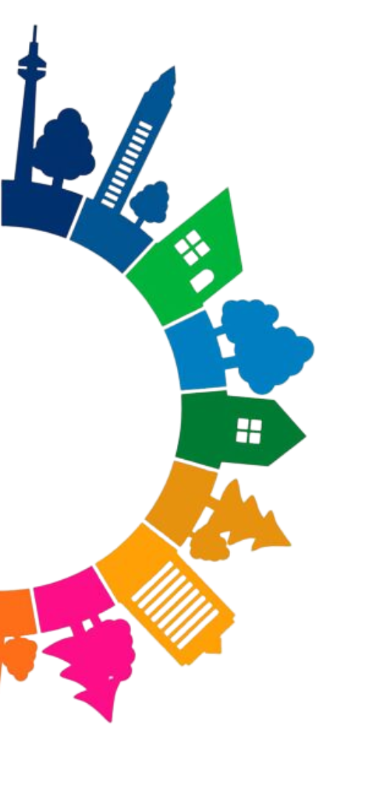
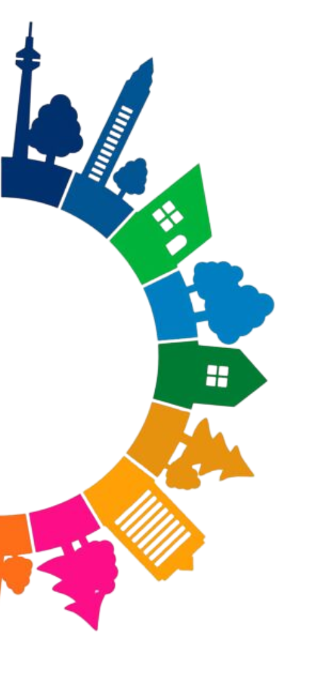

ODS 3: Saúde e Bem-Estar
Um homem para de andar quilômetros toda semana para buscar remédios para sua mãe. A saúde dela melhorou drasticamente, mas não foi por causa de um novo medicamento. O que aconteceu?
A solução envolve tecnologia e saúde a distância.
Um profissional de saúde começou a ir até a casa deles, mas o médico especialista estava em outro lugar.
ODS 3: Solução
ODS 3: Saúde e Bem-Estar
Em uma cidade, o número de atendimentos de emergência por asma infantil caiu drasticamente. Nenhuma nova vacina ou medicamento foi distribuído. O que mudou?
A mudança não foi na saúde, mas sim no ambiente da cidade.
A qualidade do ar melhorou significativamente.
ODS 3: Solução
ODS 3: Saúde e Bem-Estar
Uma adolescente se tornou a pessoa mais importante para a saúde de sua aldeia, mesmo sem nunca ter estudado medicina. Como?
Seu trabalho era focado em prevenção, não em tratamento.
Ela ensinava hábitos básicos de higiene para a comunidade.
ODS 3: Solução
ODS 3: Saúde e Bem-Estar
Uma cidade pintou faixas de pedestres com um design 3D que parecia flutuar. Por causa dessa pintura, o número de acidentes de trânsito e mortes diminuiu.
A pintura criava uma ilusão de ótica para os motoristas.
A ilusão fazia os motoristas reduzirem a velocidade instintivamente.
ODS 3: Solução
ODS 3: Saúde e Bem-Estar
Um grupo de idosos começou a se reunir para jogar videogame. Por causa disso, o índice de depressão e quedas entre eles despencou.
Os jogos não eram jogados com um controle tradicional, sentado no sofá.
Os jogos estimulavam o movimento físico e o equilíbrio.
ODS 3: Solução
ODS 3: Saúde e Bem-Estar
A taxa de mortalidade materna em uma região rural caiu 80% depois que as grávidas começaram a receber um kit com objetos simples. Não havia remédios no kit. O que havia nele?
O kit era para ser usado durante o parto.
O objetivo do kit era garantir a higiene e prevenir infecções.
ODS 3: Solução
ODS 3: Saúde e Bem-Estar
Uma empresa deu a todos os seus funcionários um dia de folga por mês para não fazerem nada. Por causa disso, a produtividade aumentou e os custos com planos de saúde diminuíram.
A folga era um investimento na saúde não-física dos funcionários.
O objetivo era combater o estresse e o esgotamento (burnout).
ODS 3: Solução
ODS 3: Saúde e Bem-Estar
Um hospital pintou seu chão com linhas coloridas, como as de um metrô. Por causa disso, o tempo de atendimento em emergências cardíacas diminuiu drasticamente.
As linhas funcionavam como um guia de navegação rápido.
Cada cor levava a uma ala de emergência específica.
ODS 3: Solução
ODS 3: Saúde e Bem-Estar
Uma geladeira foi instalada no meio de uma praça pública. Por causa dela, a saúde nutricional de muitas pessoas em situação de rua melhorou.
A geladeira não pertencia a uma única pessoa, mas à comunidade.
A comida era colocada lá por uns e retirada por outros, combatendo o desperdício.
ODS 3: Solução
ODS 3: Saúde e Bem-Estar
Em uma cidade, os médicos passaram a "receitar" visitas a um parque. Pacientes que seguiram a receita apresentaram melhora na pressão alta e na ansiedade.
A "receita" não envolvia nenhum medicamento farmacêutico.
O tratamento era o contato com a natureza e a atividade física leve.